Introdução
Para iniciarmos o estudo da linguagem JavaScript, primeiramente iremos conhecer alguns conceitos importantes, como Lógica de Programação, Algoritmos, Entrada de Dados, Processamento de Dados, Saída de Dados, Editores de Códigos, Variáveis, Constantes, Comentários, Tipos de Dados, Operadores, Conversões de Dados e também aprenderemos um pouco sobre a origem da linguagem JavaScript.
Lógica de Programação e Algoritmos
Lógica de programação é a organização de uma sequência de instruções voltadas à resolução de um problema. Ela é importante porque é quem nos dá as ferramentas para executar o processo de criação de um algoritmo. Em programação, algoritmos são um conjunto de instruções que um software ou aplicação deve seguir para executar uma tarefa, resolver um problema ou chegar a um objetivo distinto.
Algoritmos são sequências de passos que seguimos com a intenção de atingir um objetivo, pode ser desde atravessar uma rua, fazer um bolo ou definir qual critério usar para aprovar ou reprovar um aluno, por exemplo. Pense em um algoritmo como uma receita de bolo. Uma receita de bolo que nada mais é do que uma sequência lógica de etapas que, quando realizadas da maneira correta, resultam em uma deliciosa sobremesa.
Visualize a seguinte situação em que você precise fazer um bolo:
➜ Selecionar os ingredientes da receita
➜ Selecionar tigela
➜ Colocar farinha, de acordo com a medida
➜ Selecionar ovos
➜ Colocar manteiga e açúcar a gosto
➜ Colocar leite
➜ Misturar todos os ingredientes na tigela
➜ Despejar a massa na forma
➜ Levar ao forno
➜ Aguardar 40 minutos
➜ Retirar do forno
➜ Servir o bolo
Essa lógica é aplicada a qualquer coisa que fazemos diariamente e muitas das vezes não nos damos conta.
Veja esse exemplo de um algoritmo de cálculo da média, em que precisa-se analisar as notas de 3 bimestres para a disciplina de matemática e verificar se o aluno foi aprovado ou reprovado para uma média maior ou igual a 7:
➜ Obter a nota do 1º bimestre
➜ Obter a nota do 2º bimestre
➜ Obter a nota do 3º bimestre
➜ Realizar o cálculo da média para cada aluno (maior ou igual a 7 para aprovação)
➜ Informar se o aluno foi “aprovado ou reprovado”
➜ Informar a média obtida pelo aluno
Exemplo de um algoritmo para sair com o carro:
➜ Abrir a porta do carro
➜ Entrar no carro
➜ Ligar o carro
➜ Abrir o portão da garagem
➜ Engatar a marcha ré
➜ Sair com o carro da garagem
➜ Fechar o portão
➜ Engatar a primeira marcha
➜ Dirigir ao destino
Em linhas gerais, lógica de programação é todo conjunto de regras e conceitos que precisamos aplicar para criar códigos que serão interpretados e executados por um computador. Para conseguirmos instruir o computador a fazer alguma coisa, precisamos de uma linguagem de programação, que é um meio estruturado para passar instruções para a máquina. Estudar algoritmos e lógica de programação é o passo inicial para quem deseja entrar no mundo de desenvolvimento de software e começar a criar suas primeiras aplicações.
Origem da linguagem JavaScript
JavaScript foi criada pela Netscape Communications Corporation junto com a Sun Microsystems. Sua primeira versão foi lançada em 1995. Em 1996 a Netscape decidiu entregar o Javascript para a ECMA (que é uma associação dedicada à padronização de sistemas de informação). Em 1977, foi lançada a primeira edição da linguagem gerenciada por essa associação.
Javascript possui um importante papel no processo de desenvolvimento de páginas para internet, junto com HTML e CSS. Javascript é utilizado para definir o comportamento dos elementos da página. Os códigos escritos, também chamados de scripts, são interpretados diretamente pelos navegadores web.
O JavaScript não deve ser confundido com a linguagem de programação Java. Apesar de "Java" e "JavaScript" serem marcas registradas da Oracle nos EUA e em outros países, essas duas linguagens de programação são diferentes em sintaxe, semântica e casos de uso.
Editores de Códigos
Sabemos que programar não é tão simples quanto pensam por aí, mas existem ferramentas que podem facilitar e otimizar o dia a dia dos desenvolvedores, dentre as quais uma das mais importantes são os editores de código. Os editores de códigos são ferramentas que auxiliam na construção de projetos e são melhores que editores de texto tradicionais. As principais diferenças entre eles e os editores de texto tradicionais são as funcionalidades adicionais para gerenciar e editar código-fonte. Existem vários editores de código disponíveis no mercado atualmente e iremos listar alguns dos mais populares.
Vscode ➜ https://code.visualstudio.com/
Um dos mais conhecidos do mercado, este editor foi lançado em 2015 pela Microsoft e se trata de um editor de código destinado ao desenvolvimento de aplicações em diversos contextos. O VSCode é uma ferramenta leve e multiplataforma e está disponível para Windows, Mac OS e Linux. Este editor de código atende a uma quantidade enorme de tecnologias, além de oferecer suporte para mais de 30 linguagens de programação, como JavaScript, C#, C++, PHP, Java, HTML, R, CSS, SQL, Markdown, TypeScript, LESS, SASS, Node.js e Python, bem como para outros formatos de arquivos comuns. Para isso, o VSCode utiliza o conceito de extensões, as quais potencializam muito as capacidades desse IDE. O VSCode é gratuito, open source e tem seu código disponibilizado no GitHub, o que permite que você contribua com seu desenvolvimento.
Codespace ➜ https://codespace.app/
O Codespace é um editor de código online colaborativo, baseado em navegador da Microsoft e Github. Este editor de código tem suporte para repositórios Git, extensões, além de contar com uma interface de linha de comando integrada para que seja possível editar, executar e depurar seus aplicativos de qualquer dispositivo. Isso possibilita que você trabalhe em qualquer lugar, além de tornar a colaboração com outros desenvolvedores mais fácil. Apesar de a idealizadora Microsoft planejar oferecer preços acessíveis conforme o uso de ambientes de nuvem, a funcionalidade de edição de código sempre será gratuita.
Atom ➜ https://atom.io/
O Atom também é um editor de código open source e possui versões para várias plataformas, como Windows, Mac e Linux. Entre os diversos recursos que este software possui está o “autocomplete”, assim como a maioria dos editores, o que é extremamente útil no desenvolvimento de um projeto. Você pode ver por aí que o Atom pode ser considerado um editor de código “hackeável”, isso porque nele você pode mudar qualquer coisa do editor, já que foi desenvolvido em JavaScript, CSS e Node.js, o que o torna uma ferramenta bastante customizável.
Notepad++ ➜ https://notepad-plus-plus.org/
Este editor é perfeito para iniciantes, embora não muito recomendado para os que desejam softwares mais robustos e profissionais. A interface do Notepad++ é bastante intuitiva e simples de usar, o que facilita seu uso e o dia a dia. Apesar de não ser um editor robusto, nele você encontra funções mais avançadas, o que pode ser atrativo para alguns programadores.
Entrada, Processamento e Saída de Dados
Em lógica de programação, o roteiro para resolver a maioria dos programas é:
a) Leia os dados de entrada
b) Realize o processamento dos dados
c) Apresente a saída dos dados
Em programas maiores essas etapas se misturam.
A etapa da entrada de dados consiste em pedir do usuário alguma informação, como por exemplo, digitar seu nome ou data de nascimento. Após essa etapa, geralmente ocorre a etapa de processamento desses dados, como calcular se você é maior de idade. E por fim, o programa apresenta a saída desse processamento, através da exibição das informações.
Para realizar essas etapas, as linguagens de programação utilizam comandos. Há vários comandos para realizar a entrada de dados. Na etapa de processamento, geralmente se trabalha com variáveis para realizar cálculos. E na etapa de saída são utilizados alguns comandos que mostram mensagens para o usuário.
Variáveis e Constantes
Uma variável é um espaço na memória do computador destinado a um dado que é alterado durante a execução do algoritmo. Você pode imaginar que as variáveis são como “caixas” destinadas a guardar algo.
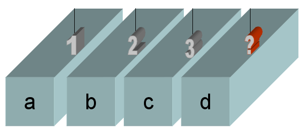
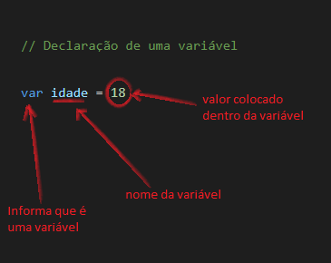
São exemplos de variáveis manipuladas em um programa: a descrição, a quantidade e o preço de um produto, ou então, o nome, o salário e a altura de uma pessoa. As variáveis devem possuir um nome e seguir algumas regras de nomenclatura.
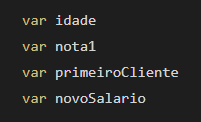
Em JavaScript os nomes de variáveis não podem:
➜ Conter espaços
➜ Começar com números
➜ Conter caracteres especiais: +, -, *, /, (), !, @, #.
➜ Utilizar palavras reservadas da linguagem: function, var, new, for, return.
Variáveis com letras maiúsculas são diferentes de variáveis com letras minúsculas. Existe um padrão chamado CAMELCASE, que é usado em palavras compostas. Trata-se de, no início da segunda palavra, usar uma letra maiúscula. Exemplo: valorTotal, primeiraNota, dataVenda.
Para fazer com que uma variável receba um dado, utiliza-se o conceito de atribuição, que é feito através do sinal de igual "=". É possível declarar uma variável e atribuir-lhe diretamente um valor.
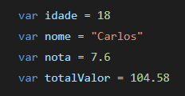
Como citado acima, o dado fica guardando dentro da variável como se fosse em uma caixa.
Constantes: diferente das variáveis, as contantes não podem ser modificadas. Elas são usadas em situações em que alguns dados nunca sofrerão alterações, como por exemplo o valor de PI.
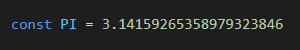
Comentários
Praticamente todas as linguagens de programação disponibilizam esta funcionalidade. Um comentário nada mais é que uma informação digitada dentro do seu código fonte que não altera nada no código. Dessa forma, os comentários ficam visíveis apenas para desenvolvedores. Fazer um comentário permite que o desenvolvedor possa deixar registradas algumas informações importantes. Este é um recurso muito útil, principalmente quando se trabalha em equipes de desenvolvimento, onde outras pessoas precisarão entender e utilizar o código fonte.
Comentários em HTML
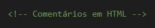
Comentários em CSS
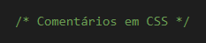
Comentários em JAVASCRIPT
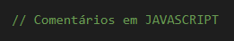
Exemplo:
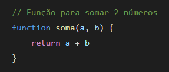
Tipos de Dados
As variáveis em um programa podem ser de diversos tipos. Em JavaScript, os tipos principais de dados são strings (textos), números e valores booleanos (true ou false). Cada tipo de variável possui operações e comportamentos específicos.

IMPORTANTE: Em JavaScript não é necessário definir o tipo da variável na hora de declarar. O tipo é definido no momento da atribuição dos valores. A atribuição de um conteúdo entre aspas (aspas simples ou duplas) cria uma variável do tipo String. Para variáveis numéricas, não devem ser utilizadas as aspas. As booleanas podem conter os valores true ou false.
Operadores
Descreveremos a seguir alguns dos principais tipos de operadores.
➜ Operadores de atribuição
➜ Operadores de comparação
➜ Operadores aritméticos
➜ Operadores lógicos
➜ Operadores de string
Operador de atribuição: um operador de atribuição atribui um valor à variável à esquerda. O operador de atribuição básico é o sinal de igual (=).
var idade = 18, significa que o valor 18 foi atribuido à variável idade.
Atribuição de adição: x += 1, é o mesmo que x = x + 1.
Atribuição de subtração: x -= 1, é o mesmo que x = x - 1.
Operador de comparação: é quando queremos comparar dois ou mais valores para obtermos a resposta de verdadeiro ou falso. Os operadores de comparações possuem diversos sinais. Alguns deles são: Igual(==), Diferente(!=), Maior que(>), Menor que(<), Maior ou Igual(>=), Menor ou Igual(<=).
(18 == 18), a resposta dessa comparação é igual a true.
(5 != 7), a resposta dessa comparação é igual a true.
(5 > 7), a resposta dessa comparação é igual a false.
(5 < 7), a resposta dessa comparação é igual a true.
(8 >= 7), a resposta dessa comparação é igual a true.
Operador aritmético: os operadores aritméticos padrão são os de soma (+), subtração (-), multiplicação (*), divisão (/), módulo (%), exponenciação (**), incremento (++) e decremento(--).
5 + 3, retorna 8.
4 - 2, retorna 2.
6 * 2, retorna 12.
8 / 4, retorna 2.
7 % 2, retorna 1 pois o resto da divisão entre 7 e 2 é igual a 1.
2 ** 3, retorna 8. É o mesmo que 2 * 2 * 2.
++2, retorna 3. É o mesmo que 2 + 1.
--2, retorna 1. É o mesmo que 2 - 1.
Operador lógico: o javascript fornece 3 operadores lógicos.
NÃO (NOT) - !
OU (OR) - ||
E (AND) - &&
Os operadores lógicos são importantes no JavaScript porque permitem comparar variáveis e fazer algo com base no resultado dessa comparação. Por exemplo, se o resultado da comparação for verdadeiro, você executa um bloco de código, se for falso, você executa outro bloco de código.
No operador E (AND - &&) - só vai resultar true quando os dois elementos comparados forem true.
true && true, retorna true
true && false, retorna false
false && true, retorna false
false && (3 == 4), retorna false
No operador OU (OR - ||) - só vai resultar false quando os dois elementos comparados forem false.
true || true, retorna true
true || false, retorna true
false || true, retorna true
false || (3 == 4), retorna false
No operador NÃO (NOT - !) - retorna o inverso, se for true retorna false e se for false retorna true.
!true, retorna false
!false, retorna true
Operador de string: o operador de concatenação (+) concatena dois valores string, retornando outra string que é a união dos dois operandos.
Ex: ("minha " + "string"), exibe a string "minha string".
Conversões de Tipos
Em JavaScript podemos realizar algumas operações envolvendo tipos diferentes, como números e strings.
"20" * 2 ➜ multiplicação entre uma string e um número, resulta no número 40
"20" / 2 ➜ divisão entre uma string e um número, resulta no número 10
"20" - 2 ➜ subtração entre uma string e um número, resulta no número 18
"20" + 2 ➜ porém a adição entre uma string e um número, resulta no número 202 (concatenação)
Para resolver esse problema, precisamos converter o texto (string) em número. Isso pode ser feito pelos métodos Number(), parseInt() e parseDouble().
var a = "20" ➜ aqui a variável "a" é declarada com uma string de valor "20"
Number(a) ➜ aqui o método Number() é usado para converter o valor de string para número, adicionando a variável "a" dentro do método.
Saída de Dados Com Alert
Agora iremos colocar a mão na massa e realizar nosso primeiro programa. Usaremos o editor Visual Studio Code, mas você pode instalar qualquer um dos editores de códigos que citamos mais acima.
Primeiramente iremos criar uma pasta que armazenará os arquivos necessários. Será criado no Desktop, porém pode ser locado em qualquer lugar, como nos Documentos por exemplo.
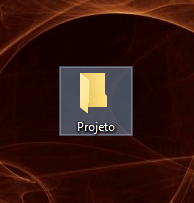
Ao abrir o editor Visual Studio Code, clice em "Arquivo" e depois em "Abrir Pasta". Selecione a pasta criada no Desktop.
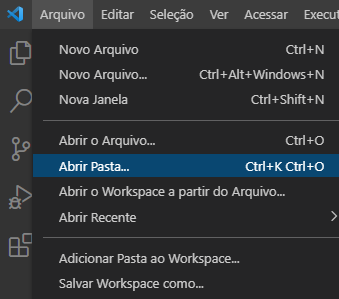
Após a pasta ser aberta, clique "Novo Arquivo" e escreva "index.html".
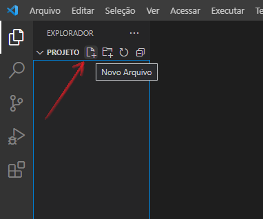
Index é o nome padrão para arquivos em HTML e o html no final é a extensão.
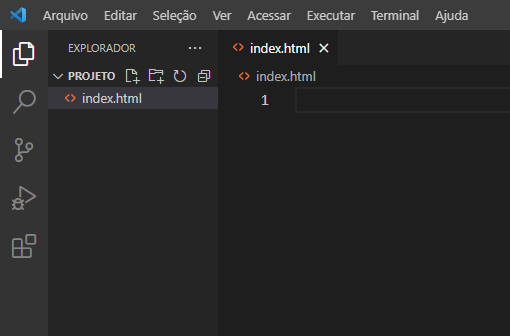
Alert é um método de saída de dados, que mostra no navegador o que foi escrito entre as aspas. Certifique-se de ter digitado os comandos da mesma forma como no exemplo e não esqueça de salvar. JavaScript é case sensitive, ou seja, diferencia letras maiúsculas de minúsculas.
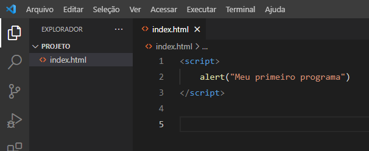
Abra a pasta que você criou para armazenar o projeto e clique no arquivo index.html. Você também pode clicar com o botão direito do mouse no arquivo, selecionar "abrir com" e escolher o navegador que você quiser.
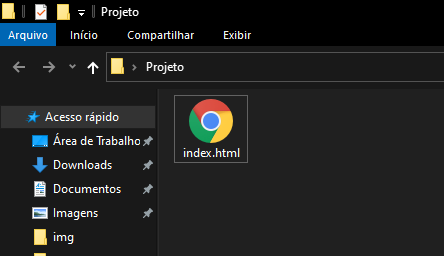
Ao executar o programa, a mensagem que você escreveu dentro das aspas é exibida em uma caixa no centro da tela. Se a caixa de alerta não foi exibida, verifique cuidadosamente se os comandos digitados estão corretos.

Entrada de Dados Com Prompt
O método prompt() é uma das formas que o programa recebe dados do usuário. Ele exibe uma caixa com um texto e um espaço para digitação. Nesse próximo exemplo iremos usar o prompt (entrada de dados) e o alert (saída de dados).
Na linha 2, o promp é armazenado dentro da variável nome. Na linha 3, temos uma string "Meu nome é: " concatenado a variável nome, através do sinal de adição (+).
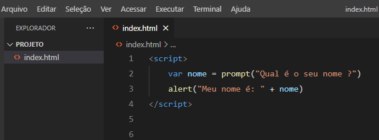
Ao abrir o programa no navegador, a primeira caixa apresentada será a de entrada de dados (prompt).
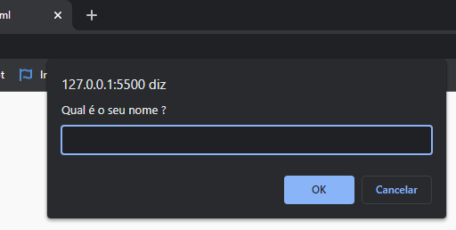
Após digitar o nome e clicar no botão OK, a segunda caixa irá abrir informando o nome digitado anteriormente, conforme foi escrito no comando alert (saída de dados).
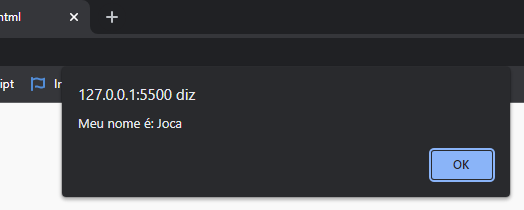
Outros comandos importantes
➜ Number()
Por padrão, o método prompt (entrada de dados) retorna uma string, não importando se o valor digitado dentro foi um número ou uma string. Sempre vai retornar uma string. Então para transformar o valor digitado em número de fato, devemos usar alguns métodos de conversão. Nos nossos exemplos sempre usaremos o Number() para converter strings em números.
➜ toFixed()
O método toFixed() acrescenta casas decimais após um ponto (.). O número dentro do método toFixed indica o número de casas decimais que aparecerá. Ex: Caso o método toFixed(2) seja aplicado ao número 33, o seu resultado será 33.00.
var valor = 33
valor.toFixed(2), o resultado é igual a 33.00
➜ \n (quebra de linha)
O comando \n deve estar dentro da string. Esse comando serve para quebrar a linha. Tudo que vier depois do \n será escrito na linha abaixo.
Exercícios
Agora iremos realizar alguns exercícios envolvendo os temas estudados até agora. Para uma melhor fixação refaça os exercícios mais de uma vez, e se possível sem olhar os resultados. Aprender programação é similar a treinar um esporte, quanto mais você exercitar mais fácil se torna.
a ) Elabore um programa que leia um número, calcule o seu dobro e mostre o resultado na saída.
b ) Elabore um programa que leia dois números, calcule a soma desses números e mostre o resultado na saída.
c ) Elabore um programa que leia o valor de um jantar, calcule a taxa do garçom (10%), calcule o valor total a ser pago e mostre o resultado na saída.
d ) Elabore um programa que leia a duração de uma viagem em dias e horas. Calcule a duração total da viagem em horas e mostre o resultado na saída.
e ) Elabore um programa que leia um número. Calcule os seus vizinhos (número anterior e posterior) e mostre o resultado na saída.
f ) Elabore um programa para uma pizzaria, o qual leia o valor total de uma conta e quantos clientes irão pagar. Calcule o valor a ser pago por cada cliente e mostre o resultado na saída.
Resolução dos Exercícios
a ) Na linha 2 o método prompt é colocado dentro da variável numero. Na linha 4 a variável dobro recebe uma operação de multiplicação (numero * 2). Na linha 6 o método alert (saída de dados) mostra a string ("O dobro é: ") concatenada (+) com a variável dobro.

Ao abrir o programa no navegador, a primeira caixa apresentada será a de entrada de dados (prompt).
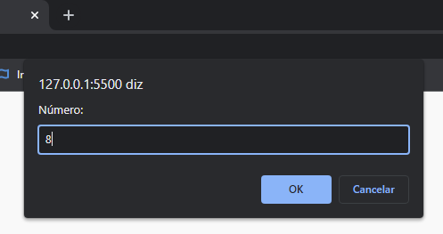
A segunda caixa será a saída de dados, conforme escrito no comando (método) alert.
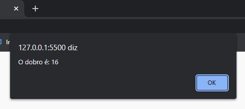
b ) Por padrão, o método prompt (entrada de dados) retorna uma string, não importando se o valor digitado dentro foi um número ou uma string. Sempre vai retornar uma string. Então para transformar o valor digitado em número de fato, devemos usar alguns método de conversão. Nesse caso usaremo o método Number().
Na linha 2 e 3, através do método Number(), convertemos o valor digitado para número. Na linha 5, a variável soma recebe os dois números e realiza uma operação de adição. Na linha 7, o método alert (saída de dados) mostra a string ("A soma é: ") concatenada com a variável soma.
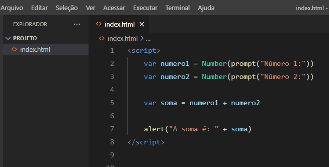
Ao abrir o programa no navegador, a primeira caixa apresentada será a de entrada de dados (prompt).
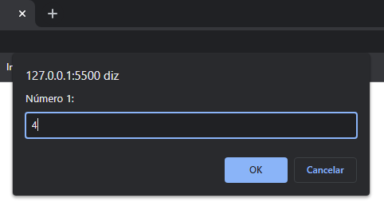
Aqui temos outra entrada de dados.
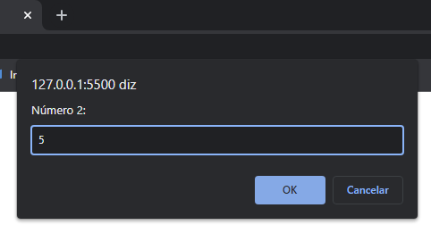
E aqui a saída de dados, conforme escrito no comando (método) alert.
c ) Na linha 2, temos a entrada de dados (promp) e o valor recebido sendo convertido em um número através do método Number(). Na linha 4, a variável garcom está recebendo uma operação de adição (valorJantar * 0.10). Por que 0.10 ? Por que esse valor significa 10% do garcom (10 / 100 = 0.10). Na linha 6, temos a variável total que recebe uma operação de adição (valorJantar + garcom). Na linha 8, é apresentada a saída de dados através do método alert.
Primeiro temos o método toFixed(2), que acrescenta duas casas decimais após um ponto (.). Caso o método seja aplicado ao número 33, o seu resultado será 33.00. O número dentro do método toFixed indica o número de casas decimais que aparecerá. O segundo comando é o \n que está dentro da string. Esse comando serve para quebrar a linha. Tudo que vier depois do \n será escrito na linha abaixo.
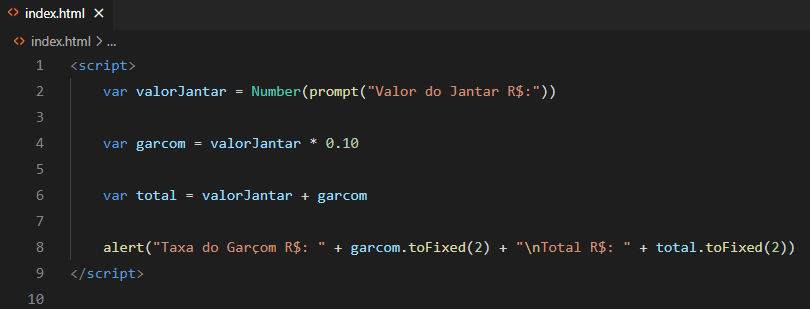
Ao abrir o programa no navegador, a primeira caixa apresentada será a de entrada de dados (prompt).
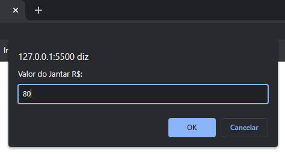
Aqui temos a saída de dados, conforme escrito no comando (método) alert. Notem que a quebra de linha aconteceu devido o comando \n.
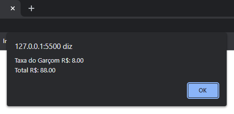
d ) Nas linhas 2 e 3, temos duas entradas de dados através do método prompt() e seus valores são convertidos para número através do método Number(). Na linha 5, a variável total recebe uma expressão, onde primeiro é resolvido o que está entre parênteses. Na linha 7, é apresentada a saída de dados através do método alert().
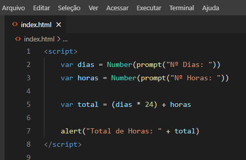
Ao abrir o programa no navegador, a primeira caixa apresentada será a de entrada de dados (prompt).

Aqui temos outra entrada de dados.
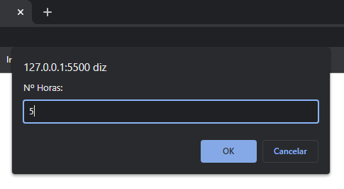
Aqui temos a saída de dados, conforme escrito no comando (método) alert.
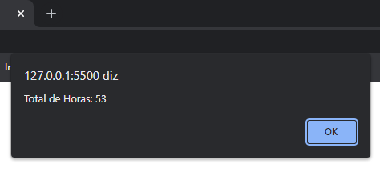
e ) Na linha 2, temos a entrada de dados prompt() que é convertida em número através do Number(). Na linha 4 e 5, temos duas variáveis que recebem operações. Na linha 7, temos a saída de dados alert(). Os valores dentro do alert foram quebrados com o "enter" para caber na tela, isso não altera a saída de dados no navegador.
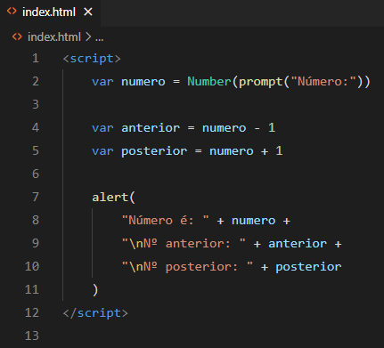
Ao abrir o programa no navegador, a primeira caixa apresentada será a de entrada de dados (prompt).
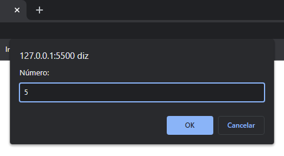
Aqui temos a saída de dados, conforme escrito no comando (método) alert. As linhas foram quebradas usando o comando \n.
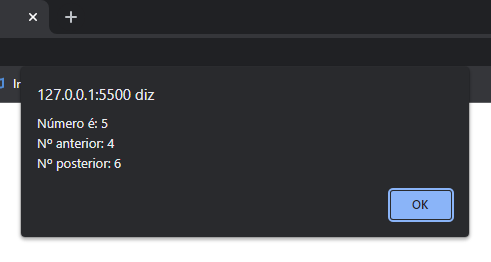
f ) Na linha 2 e 4, temos uma entrada de dados prompt() onde o valor recebido é convertido em número através do método Number(). Na linha 6, temos a variável valorPorCliente recebendo uma operação de divisão. Na linha 8, temos a saída de dados alert(), onde novamente o método toFixed(2) é usado para acrescentar 2 casas decimais após um número. Temos também o comando \n para quebrar a linha.
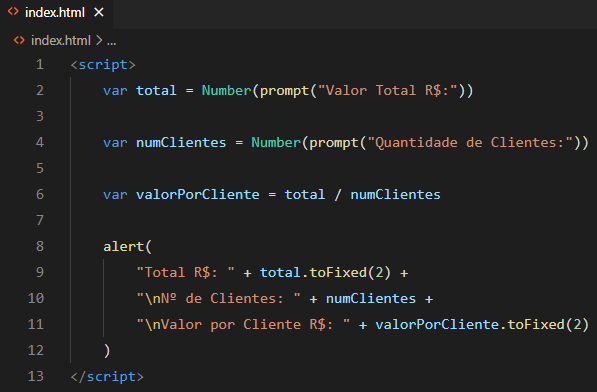
Ao abrir o programa no navegador, a primeira caixa apresentada será a de entrada de dados (prompt).
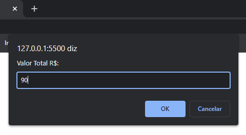
Aqui temos novamente uma entrada de dados.
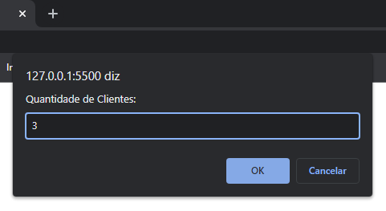
Aqui temos a saída de dados, conforme escrito no comando (método) alert. As linhas foram quebradas usando o comando \n.
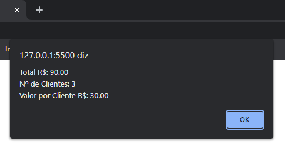